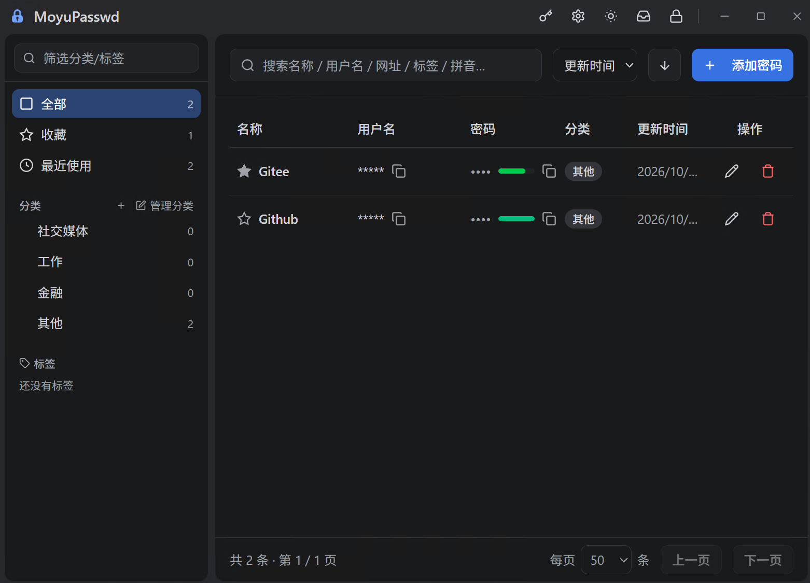
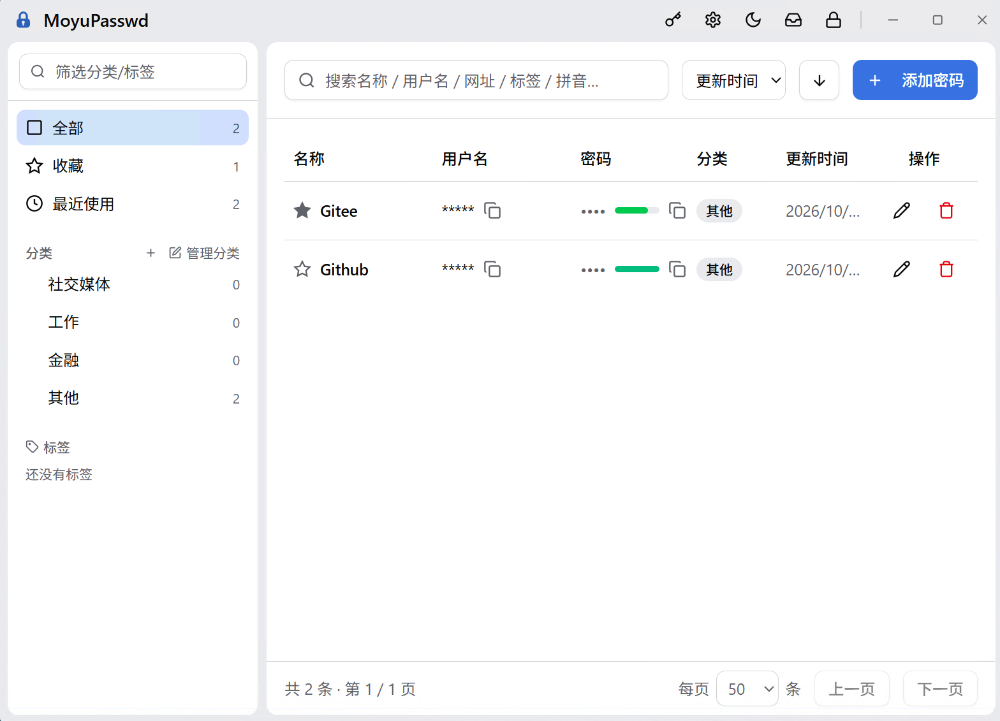

密码存本地，
Ctrl+V 直接注入
默语密码管理器（MoyuPasswd）是一款基于 Tauri 2 + Rust 构建的跨平台桌面密码库。 全库加密离线存放，复制密码时不进系统剪贴板——Windows 与 Linux（X11）下切到目标窗口按一下 Ctrl+V 直接落字，Wayland 下改为拖放交付。


该有的都有，多余的一个不加
不追求功能堆砌，只把「存、找、用」这三件事做到顺手：密码落在本地加密库里， 用的时候一次按键就到位，其余时间它安静地待在托盘里。
主密码 + 双层加密
Argon2id 派生密钥，SQLCipher 全库加密，条目再以 AES-256-GCM 单独加密，盘上找不到半段明文。
Ctrl+V 注入，不碰剪贴板
倒计时内切到目标窗口按 Ctrl+V，密码由后端直接输入并立刻清零。Windows 走 SendInput，Linux X11 走 XTest；Wayland 改为拖放交付，同样不进剪贴板。
全局快速搜索
Ctrl+K 随时唤起，标题、用户名、URL、标签、拼音一起模糊匹配；搜索与筛选由 Rust 侧执行，库再大也不卡。
分类 + 标签双维
分类管「这是哪个系统的」，标签管「这条属于哪种用途」，侧栏标签多选取交集，比层层文件夹好用。
自定义字段
连接地址、端口、连接命令都能挂上；标记为「敏感」的字段同样加密存储，快捷查询里按 → 展开逐个复制。
密码生成器
长度与字符集可调，实时给出强度评级；生成即用，不必自己憋一个强密码再背下来。
空闲才锁定
按系统空闲时间判断，离开电脑才锁，键鼠一动就重置；锁定同时清掉内存里的密钥。
爆破防护 + 系统认证
连续输错按 30s 起渐进锁定，计数落盘重启不清零；Windows 上支持 Windows Hello 指纹/面容解锁，改密后密钥自动轮换，Linux 下以主密码解锁。
备份与恢复
改主密码前自动留副本，可一键恢复也可回退；导出为带备份密码的加密包，导入整包事务、冲突默认跳过。
托盘 + 全局快捷键
关闭即最小化到托盘继续待命，开机可自启；Ctrl+K 搜索、Ctrl+Shift+N 添加、Ctrl+Shift+G 生成器都可改键。
双维度主题
明暗模式独立于色系，经典中性 / 电光青 / 暮光黄昏 / Islands 四套各有明暗两版，设置页卡片实时预览。
界面自愈与逃生通道
webview 心跳看门狗发现无响应自动重载；真卡死了还有 Ctrl+Alt+Shift+R 重载、Ctrl+Alt+Shift+E 强制退出。
明文只活在最必要的那一瞬间
密码管理器最容易被问的一句是「它自己安全吗」。这里的答案写在代码里： 入库即加密，用时才解密，用完立刻清零，锁定后一律作废。
主密码 ──► Argon2id ──► 哈希（仅用于校验）
└──► AES-256 密钥 ──► SQLCipher 全库加密
└──► 条目级加密
// 存放位置
%APPDATA%/com.moyu.passwd/
├─ moyu_passwd.db 全库加密
├─ audit.log 注入审计，不含明文
├─ lockout.json 失败计数，重启不清
└─ backup/ 改密前自动副本
- 密码不进剪贴板：注入式交付，剪贴板管理器、云同步、历史记录都看不到。锁定时还会禁止写剪贴板，防劫持。
- 注入前先认目标：记录目标进程，默认拒绝向终端注入（防命令行历史与回显泄露），5 秒内再按一次才放行；归因失败一律不注入。
- 文本复制会自清：用户名、URL 等复制后按设置 10 / 30 / 60 秒自动清除，且用指纹比对只清本应用写入的内容，不误删你新复制的东西。
- 敏感命令有门禁：未解锁状态下敏感指令一律拒绝，首跑未设主密码时同样拒绝。
- 改密崩溃安全：修改主密码失败或断电自动回滚，不会留下半新半旧的数据。
- 文件权限加固：数据库与审计日志的文件权限限制访问（Windows 收紧 ACL，Linux 置为 0600），同机其他账户读不到。
同一套密码库，两个系统各自最合适的交付方式
Windows 与 Linux 共用同一份加密库和界面代码，差异只在「密码怎么送到目标输入框」这一层。 每一条平台限制都写在下面对应位置，不做模糊宣传。
- 密码交付Ctrl+V 注入（SendInput 合成按键），密码不进剪贴板
- 目标校验前台进程归因 + 终端黑名单，归因失败不注入
- 解锁主密码 / Windows Hello 指纹·面容
- 其它全局快捷键、托盘、系统空闲自动锁定、管理员启动
- 密码交付Ctrl+V 注入（XTest 合成按键，x11rb 用户态免提权）
- 目标校验EWMH 活动窗口 + /proc 进程归因，语义与 Windows 一致
- 解锁主密码（生物识别暂不支持）
- 注意非 ASCII 密码映射不到当前键盘布局时整次放弃，回退剪贴板粘贴
- 密码交付置顶浮窗拖放：点复制 → 条目进浮窗 → 拖到目标输入框
- 目标校验无（协议不提供目标身份），落点由你选定
- 解锁主密码
- 注意全局快捷键与快速搜索独立窗暂不可用；浮窗只存标题、用户名
手不离键盘
全局快捷键在任何应用里都能用，键位可在「设置 → 快捷键」里改（Linux Wayland 会话暂不支持全局快捷键）；底部两条是系统级逃生通道，不可改、也不会被界面卡死影响。
| 功能 | 默认按键 | 说明 |
|---|---|---|
| 快速搜索 | Ctrl + K | 弹出独立搜索窗口，回车直接复制并进入注入待命 |
| 快速添加 | Ctrl + Shift + N | 不打断当前工作，直接录入新密码 |
| 密码生成器 | Ctrl + Shift + G | 随时生成一个可用的强密码 |
| 展开字段详情 | → / Tab | 快捷查询中展开自定义字段，← 收起 |
| 紧急重载网页 | Ctrl + Alt + Shift + R | 界面卡死或显示异常时强制重载主窗口 |
| 强制退出 | Ctrl + Alt + Shift + E | 完全无响应时退出应用，退出前自动清空剪贴板 |
界面交给系统 WebView，不打包 Chromium
界面交给系统自带的 WebView 渲染（Windows 用 WebView2、Linux 用 WebKitGTK），不打包一份 Chromium； 加密、数据库、进程归因与按键注入全在 Rust 侧，前端只负责画界面。
从 0.1 到 0.4，再到 Linux
X11 下完成整条 Ctrl+V 注入链路（XTest 合成 + EWMH 归因 + 会话内抓键），Wayland 改为置顶浮窗拖放交付；新增密码交付方式设置（自动 / 写入剪贴板，适配远控客户端）；窗口缩放模型统一、自绘缩放热区、原生下拉替换为主题自绘，文件权限统一收紧到 0600。
标签与后端驱动搜索、明暗 × 色系双维度主题、备份与恢复、设置自动保存、管理员启动开关、单实例守卫、系统固定快捷键逃生通道、解锁门禁、webview 心跳看门狗、自绘标题栏、双变体安装包。
密码注入与安全架构重构、自定义字段、统一图标组件。
备注零解密、安全密码粘贴、主密码修改一致性。
首个可用版本：密码库、快速搜索、设置、打包与系统认证。
现在就把密码收进本地
Windows 安装包提供「自带 WebView2」与「依赖系统 WebView2」两个版本；Linux 在源码目录执行 pnpm tauri build，产出 .deb / .rpm / .AppImage。